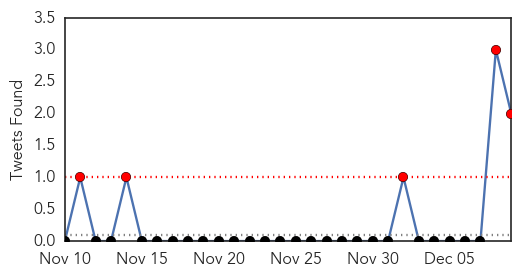

Pertussis
30-Day Web Trend
1 alerts, 0 warnings

30-Day Twitter Trend
0 alerts, 0 warnings

Article Locations
Article Confidences

Top Articles:
- 0.909
- Keep your germs at home, please
- 0.858
- Whooping Cough Outbreak at Massachusetts High School Affected Only Vaccinated Students
- 0.794
- Whooping cough outbreak sickens 10,000 in California
- 0.700
- Whooping Cough Back With a Vengeance in California
- 0.562
- Requiring vaccinations for all who have contact with newborns is on the rise
Top Tweets:
-
No tweets found for Dec 09, 2014
Influenza
30-Day Web Trend
8 alerts, 0 warnings
30-Day Twitter Trend
5 alerts, 0 warnings

Article Locations

Article Confidences

Top Articles:
- 1.000
- Flu-related trips to hospital climbing
- 0.999
- Influenza arrives in Steele County, health officials encourage vaccinations
- 0.999
- Norwalk Reflector: Flu-related hospitalizations increase significantly in Ohio
- 0.999
- Different flu strains send more people to hospitals
- 0.999
- Arkansans Urged to Get Flu Shot - Story
- 0.998
- CDC widens availability of free influenza treatments
- 0.997
- Health notes: Minnesota advocates flu shots
- 0.997
- WV MetroNews – Health officials promote National Influenza Vaccination Week
- 0.995
- McHenry County health officials encourage flu shots despite virus mutation
- 0.995
- Doctors: Vaccinations still best defense against the flu
- 0.995
- Department of Health Services: Flu vaccine remains the best protection against influenza
- 0.994
- Health officials encourage flu shot after Brevard death
- 0.989
- Should you get flu shot if only 50 percent effective?
- 0.970
- England health officials call on pregnant women to get flu shot in light of new report
- 0.964
- Metro flu cases skyrocketing
- 0.952
- Novartis’ Flu Vaccine Causes 13 Deaths In Italy, But EU Agency Confirms No Evidence Shows Flu Vaccine Caused The Deaths
- 0.896
- December 9, 2014 Community Happenings
- 0.858
- Brevard woman who died of flu had underlying health issues
- 0.800
- Flu Affecting Students in Richardon ISD
- 0.757
- Birmingham councilor sponsors free flu shot clinics
- 0.741
- Keep the holidays healthy by trying to avoid some common hazards
- 0.604
- U.S. suspends some Canadian poultry imports due to bird flu
- 0.591
- Bird Flu Control Zone Set up in Canada; Seven Countries Ban Imports
Top Tweets:
- 0.762
- This week (Dec 7-13) is National Influenza Vaccination Week! The big question is: Have you gotten your flu vaccine? NIVW2014
- 0.648
- Starting in 5 minutes we’ll be focusing on flu vaccine in honor of National Influenza Vaccination Week NIVW2014